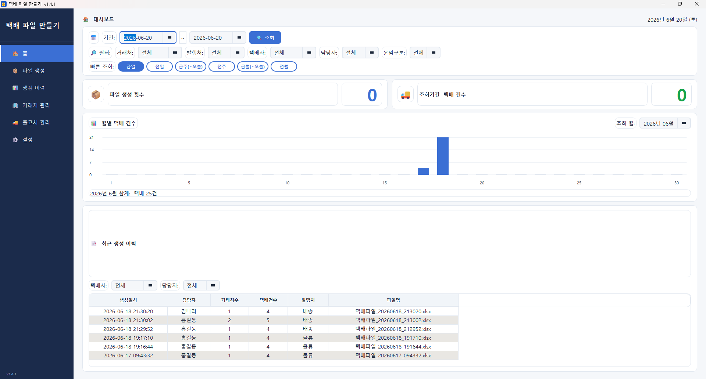
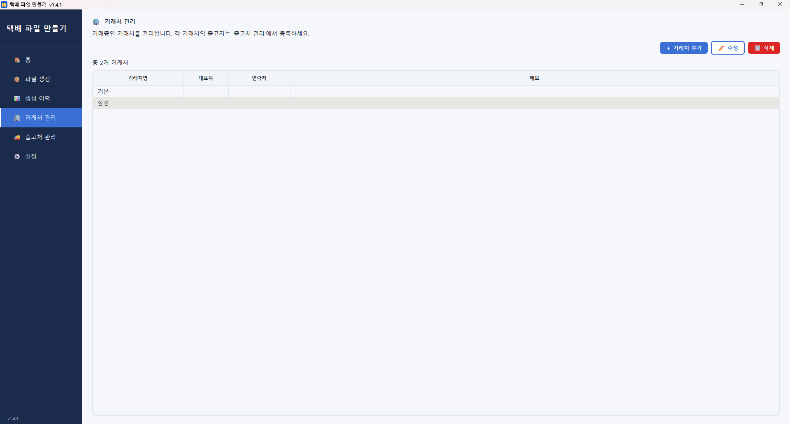
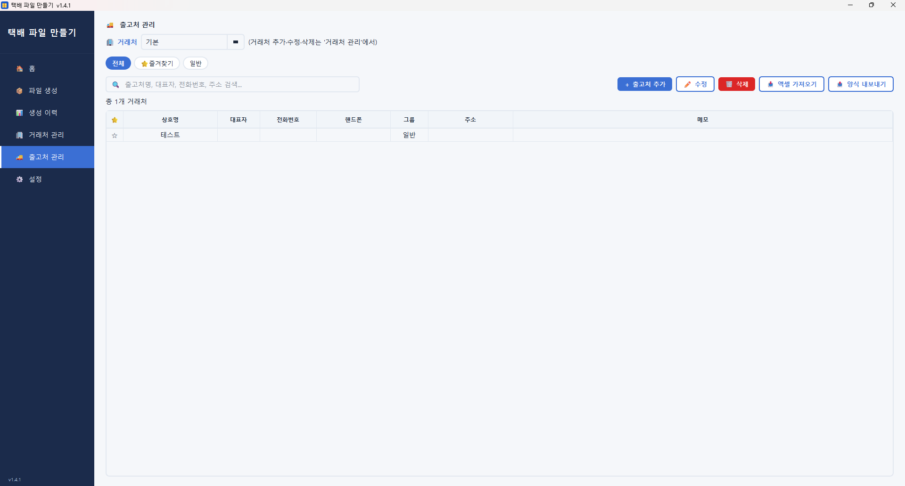
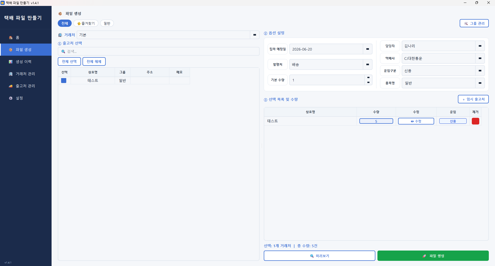
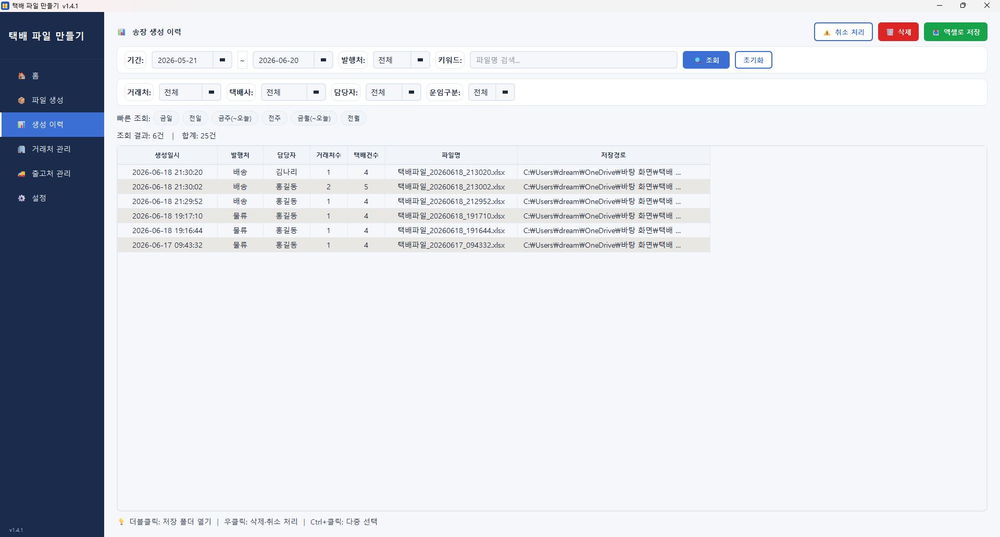

📖 사용 설명서
택배 파일 자동화 사용 방법
설치와 라이선스 활성화부터 거래처·출고처 관리, 송장 파일 생성까지
처음 사용하시는 분도 순서대로 따라 하실 수 있도록 정리했습니다.
구매 후 받으신 바우처 코드로 1대의 PC에서 영구 사용하실 수 있습니다. 설치와 활성화는 한 번만 하면 됩니다.
설치 파일 다운로드 — 구매 승인 후 이메일로 받은 다운로드 링크, 또는
설치 파일 다운로드 페이지에서 구매자 이메일을 입력해 받습니다.
설치 실행 — 받은 설치 파일(.exe)을 실행하고 안내에 따라 설치합니다. 설치가 끝나면 바탕화면에 아이콘이 생성됩니다.
프로그램 실행 — 아이콘을 더블클릭하면 처음 한 번 '라이선스 활성화' 창이 나타납니다.
바우처 코드 입력 — [🎫 바우처 코드 입력] 탭에서 이메일로 받은 코드(SOEZ-XXXX-XXXX-XXXX)를 입력하고 [✅ 바우처로 활성화]를 누릅니다.
활성화 완료 — 정상 처리되면 메인 화면이 열립니다. 이후에는 활성화 창 없이 바로 실행됩니다.
⚠️ 활성화 시에는 인터넷 연결이 필요합니다(서버에서 코드 확인). 활성화가 끝난 뒤 일상 사용은 인터넷 없이도 가능합니다. 바우처 코드는 1대의 PC에서만 사용됩니다.
💡 판매자에게 라이선스 키(XXXX-XXXX-XXXX-XXXX 형식)를 직접 받은 경우에는 [🔑 라이선스 키 직접 입력] 탭을 사용하세요.
왼쪽 사이드바의 메뉴로 화면을 이동합니다. 각 메뉴의 역할은 다음과 같습니다.

▲ 메인 화면 — 왼쪽 사이드바 메뉴 + 대시보드
💡 거래처는 상위(예: 'A브랜드'), 출고처는 그 아래 실제 보내는 곳(여러 매장·지점)입니다. 거래처를 고르면 그 거래처에 속한 출고처만 보여줍니다.
송장을 만들기 전에 먼저 거래처(상위 업체)를 등록합니다. 거래처는 그룹으로 분류해 관리할 수 있습니다.

▲ 거래처 관리 화면
거래처 추가 — 추가 버튼을 눌러 상호명·대표자·연락처·주소·메모 등을 입력하고 저장합니다.
그룹 분류 — 거래처가 많으면 그룹을 만들어 묶으면 송장 생성 시 그룹 단위로 빠르게 필터할 수 있습니다.
수정·삭제 — 목록에서 항목을 선택해 정보를 수정하거나 삭제합니다. (출고처가 연결된 거래처는 안전을 위해 삭제가 제한될 수 있습니다.)
각 거래처 아래에 실제 택배를 보내는 출고처(매장·지점·수령처)를 등록합니다. 송장은 이 출고처 정보로 만들어집니다.

▲ 출고처 관리 화면
[🚚 출고처 관리] 메뉴에서 상단의 거래처를 먼저 선택합니다.
출고처 추가 — 상호명·대표자·전화번호·핸드폰·주소·메모를 입력합니다. 입력한 주소·연락처가 송장에 그대로 들어갑니다.
대량 관리 — 검색으로 빠르게 찾고, 여러 항목을 선택해 한 번에 삭제할 수 있습니다.
💡 출고처 정보(주소·연락처)를 정확히 입력해 두면, 이후 송장 만들 때 매번 다시 입력할 필요 없이 클릭만으로 끝납니다.
거래처마다 저장 경로와 송장 옵션을 따로 기억합니다. 그리고 한 화면에서 거래처를 바꾸면 모든 화면이 같은 거래처 기준으로 함께 바뀝니다.
거래처별 저장 위치 — 거래처마다 파일을 저장할 폴더를 다르게 지정해 두면, 그 거래처를 고를 때 자동으로 해당 폴더에 저장됩니다.
옵션 자동 전환 — 거래처를 선택하면 그 거래처에 저장된 운임·품목 등 송장 옵션이 자동으로 적용됩니다.
전역 동기화 — 홈·파일 생성·이력·거래처/출고처 관리 어느 화면에서든 거래처를 바꾸면, 다른 화면도 같은 거래처 기준으로 보입니다.
💡 여러 거래처를 번갈아 작업해도, 거래처만 고르면 저장 위치·옵션이 알아서 따라오므로 설정을 매번 바꿀 필요가 없습니다.
가장 많이 쓰는 화면입니다. 거래처와 출고처를 고르고 수량만 입력하면 택배사 양식에 맞춘 엑셀 송장 파일이 한 번에 만들어집니다.

▲ 파일 생성 화면 — 거래처/출고처 선택 + 수량 입력
① 거래처 선택 — 상단 🏢 거래처 콤보에서 작업할 거래처를 고릅니다. 선택한 거래처의 출고처만 아래 목록에 나타나고, 저장 설정·옵션도 자동 적용됩니다.
② 출고처 선택 — 보낼 출고처를 체크합니다. 검색으로 찾거나 [전체 선택]/[전체 해제]를 활용하고, 그룹 필터로 범위를 좁힐 수 있습니다.
③ 수량 입력 — 각 출고처의 택배 건수(수량)를 입력합니다. 선택 개수와 총 수량이 하단에 표시됩니다.
④ 옵션 확인 — 운임 구분·품목명 등을 확인합니다. 필요 시 '미표기'로 비워둘 수 있고, 운임 가격 미표기 여부도 체크할 수 있습니다.
⑤ 생성 — 생성 버튼을 누르면 택배사 양식에 자동으로 맞춰 엑셀 송장 파일이 만들어지고, 거래처의 저장 경로(날짜별 폴더)에 저장됩니다.
💡 한 거래처의 여러 출고처를 한 번에 선택해 하나의 송장 파일로 만들 수 있어, 매장이 많아도 클릭 몇 번이면 끝납니다.
⚠️ 만든 파일은 곧바로 택배사 양식에 맞춰져 있으므로, 별도 가공 없이 택배사 시스템에 업로드하거나 출력해 사용하시면 됩니다.
홈 화면에서는 파일 생성 횟수 등 사용 현황을 한눈에 확인할 수 있습니다. 표 머리글을 클릭해 정렬할 수 있습니다.
💡 자주 쓰는 거래처와 작업량을 빠르게 파악해 업무 흐름을 점검하기 좋습니다.
지금까지 만든 송장 파일의 기록을 확인합니다. 거래처를 기준으로 필터링해 원하는 이력만 볼 수 있습니다.

▲ 생성 이력 화면
💡 어떤 거래처에 언제 송장을 만들었는지 추적할 수 있어, 누락·중복 발송을 줄이는 데 도움이 됩니다.
설정 화면에서 기본 저장 경로 등 프로그램 동작에 관한 기본값을 지정할 수 있습니다.
기본 저장 경로 — 거래처별 저장 위치를 따로 지정하지 않은 경우 사용할 기본 폴더를 설정합니다.
프로그램 정보 — 현재 버전을 확인할 수 있습니다.